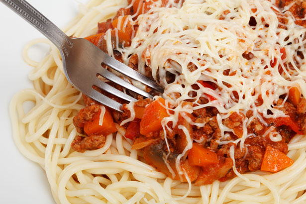

Home
Spaghetti bolognese

Classic Italian Spaghetti bolognese
An Italian, and Swedish, classic is on tonight's menu!
A delicious bolognese that gets its flavor from garlic and oregano and its saltiness from soy.
Then serve the meat sauce with spaghetti al dente and top with fresh arugula. Tasty food!
Ingredients
- 1 carrot
- 1 yellow onion
- About 500 g minced beef or mixed minced meat
- 1 tbsp olive oil
- 2 tsp dried oregano
- 1 pack crushed tomatoes with garlic (390 g each)
- 3 dl water
- 2 tbsp tomato paste
- 1/2 msk japansk soja
- 1 köttbuljongtärning (eller motsvarande mängd fond)
- salt
- Pepper
- 4 portions spaghetti
- 65 g arugula or other green salad
Steps
- Mix in oregano, crushed tomatoes, water, tomato paste, soy sauce and crumbled bouillon cube.
- Reduce the heat and let the sauce simmer for about 10 minutes, covered. Season with salt and pepper.
- Cook the pasta according to the instructions on the package.
- Serve the meat sauce with spaghetti and arugula.